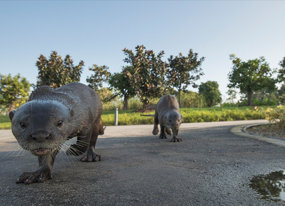

NATIONAL GEOGRAPHIC
Along Hadrian’s Wall, ancient Rome’s temples, towers, and cults come to life
TRAVEL
Hadrian’s Wall once marked the extent of the Roman empire in Britannia. Now it’s a pitstop on the way to Scotland’s capital, Edinburgh, or the country’s largest city, Glasgow. Things have changed over the past two thousand years.
But the 73-mile-long chain of walls, ditches, towers, and forts which stretches across Great Britain, linking the North Sea and the Irish Sea continues to fascinate. This year, 1,900 years after construction began, soldiers clad in Roman armor will once again patrol its length and the sounds of ancient instruments will float over its ramparts.
These celebrations make now a great time to visit, and an even better time to hike its length. The wall’s most popular attraction, the sprawling hillside complex of Housesteads Roman Fort, sees some 100,000 visitors per year. But only 7,000 people hike the full length of the wall annually.
The reign of Roman emperor Hadrian (A.D. 117-138) coincided with the pinnacle of Roman power. An expansive emperor Roman territory reached its widest extent when his reign began he was known as a builder of monuments, from his opulent villa at Tivoli, near Rome, to the defensive fortifications marking the frontiers of his empire; both are UNESCO World Heritage sites.
Stepping into ancient life
The wall’s relatively small number of thru-hikers presents a perfect opportunity to connect with the distant past in a landscape that often resembles its ancient state.
In the wake of my father’s death due to COVID-19, this setting became an ideal place to mourn, remember, and move onward as my father would wish. My route takes me along the 84-mile Hadrian’s Wall Path, a U.K National Trail, from Arbeia South Shields Roman Fort in the coastal suburbs of Newcastle to the marshy out skirts of Carlisle at Bowness-on-Solway.
Clad in sturdy boots and carrying an overstuffed backpack, I’m joined on my trek by archaeologist Raven Todd DaSilva. Together, we set off to retrace the wall’s route from east to west. Instead of hotel key cards, we carry tents an effort to save money and to catch a glimmer of the wall’s wildlands as they might have appeared during Roman times.
While traveling an ancient trail, searching for new discoveries along a route that formed the northwest frontier of the Roman empire for nearly 300 years, we find that we are not alone.
Less than a mile from St. James Park, the city’s 52,000-seat English Premier League stadium, a crew of waterworks employees laying pipe for Northumbrian Water Group discovered a nine-foot section of Hadrian’s Wall buried just two feet below modern asphalt. Ultimately, the pipe was rerouted and the stones were left undisturbed.
Hadrian’s Wall occupies an interesting position among UNESCO World Heritage sites. These defensive fortifications were never lost to time; they simply became part of new communities sprouting up along their contours. Stones from the wall litter nearby farmlands. They form the foundations of nearby chapels and roads.
“That’s not usually what we do now,” says Todd DaSilva. “We separate history and fence it off, but things haven’t always been that way.”
Exploring Roman technology
Ancient archways, bridge abutments, and earthworks are scattered along our route west. Progress on the path is slow, and it takes days for the urban sprawl of Newcastle to give way to farmlands and fields.
From a pasture near Chollerford, Todd DaSilva sprints through the rain towards low, grassy mounds marking the location of a milecastle, a small fort. A few hours later, in a meadow near Hexham, we uncap a flask to celebrate as the mounds marking our journey turn to waist-high rows of stone our first true glimpse of the wall.
Comments :
- john Very good
- john Very good
Leave a Reply
Your email address will not be published. Required fields are marked*
Related posts:
-
Cheeky otters are thriving in Singapore and adapting quickly to big city life
SINGAPOREOn a grassy strip along the highway, a blur of brown fur moves quickly, a small head popping up every so often to check for danger. It’s a family of seven otters, likely on their way to their den at the Singapore Botanic Gardens.
View article -
 New York City has a turtle problem
New York City has a turtle problemNEW YORK CITYBright green and viscous, Morningside Pond looks like a vat of unappealing pea soup. Styrofoam cups and plastic bags cling to the pond’s edge, bound in place by bubbles of green foam.
View article -
 Wild boars make a home amid Hong Kong’s high rises and highways
Wild boars make a home amid Hong Kong’s high rises and highwaysHONG KONGOn a Wednesday morning in one of Hong Kong’s high-end residential areas, a large wild boar napped peacefully on the side of a road. It was seemingly oblivious to the rush hour traffic whizzing past mere feet away
View article